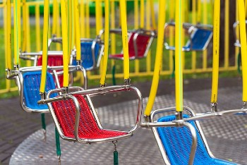

Franklin County Fair shelved for 2020
The Franklin County Fair Board cancelled the 2020 Franklin County Fair last night,
June 1, after a meeting with county commissioners about guidelines set by the Center for Disease Control
(CDC) and the state, and their impact on producing the annual tradition.
"We have sadly decided it is in best interest of the community," stated a post on Facebook.
"Based on all information we have available today, it would not be possible to put on an event of this
size and make the needed adjustments to adhere to current state of Idaho guidelines as well as CDC
recommendations without eliminating many events, attractions, vendors, and significantly changing the
look and feel of the Franklin County Fair. It would also be inconsiderate of the Franklin County Fair to
put the additional strain on the town and its emergency services during this time."
"Our goal as a fair board every year is to enhance your experience when visiting the fair. We do not
feel it is in the best interest of you, our valued guests, or ourselves, to offer you an event that is
subpar or completely downscaled. We are not in the business of doing things halfway. We want you to get
our very best and welcome you to attend next year 2021!"
The fair's livestock committee is meeting with 4-H leaders on July 8, to prepare a plan to hold the
youth market sales and present the completion of 4-H projects while adhering to COVID-19 precautions.
More information will be provided as the plan is completed.
"All the market animal, 4-H dairy and horse competitions will be held," said Bracken Henderson of the
Franklin County Extension Office.
4-H projects will not be shown in the fair buildings for people to see, but shows for the steer, swine,
lamb, and bucket calves will be held and there will still be an auction. An opportunity for youth
involved sewing projects will also have an opportunity to show their projects.
There's been talk about having the sale in rodeo arena, or setting up differently in the show barn to
make sure we have adequate space to distance themselves from each other. All current ideas are
predicated on getting a standard operating procedure approved by health department, Henderson said.
"What we are trying to do is to make it so that kids who have been working on projects, who are required
to show them ... complete those projects," he said. "You know, a lot of these kids have been working on
it all year long. A significant amount of money has been invested, yes, but the time that these kids
have put in is important. They want to complete them - that's an important part of fulfillment," said
Henderson.
From baking to sewing to crafts, the 4-H office is already starting to collect those projects in the
office. "We will continue to collect those and judge them in the office here. Probably we will put
together some sort of a slide presentation that will be available for people to see, that will meet
their requirements," Henderson said.
"We do appreciate the Franklin County Fair Committee and County Commissioners and the situation they are
in. We support their roles and responsibilities and appreciate that we can complete the 4-H component,"
said Henderson. "With everything it seems, being cancelled and restricted, the more we can do to be
normal is better for the youth," he said.
"We look forward to brighter better days ahead when we can gather again to celebrate all that is
exceptional about Franklin County. Until then, stay safe, be well, be kind, and support each other.
We’ll miss you all," states the letter from fair board members, Wes Harris, Cody Traveller, Dixie
Kendall, MaryLynn Smith, Kimberlee Keller, Lisa Barnard, Troy Schvaneveldt, John and Lana Jenkins,
Syndee Christensen, Cara Nielson and Cindy Fellows.
By NECIA P. SEAMONS Citizen editor Jul 2, 2020
Contact Us
27 N. State Street
Preston, Idaho 83262
☎ 208.598.6874
✉ contact@weatherwonder.com